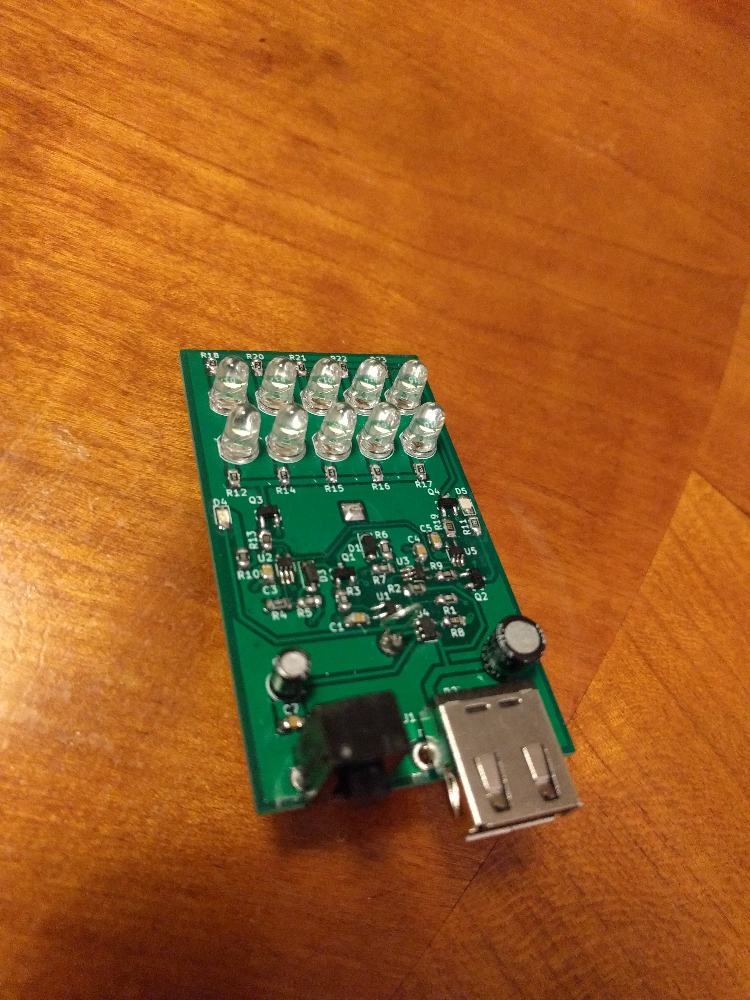
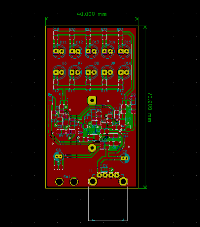

Description
Details
Circuit Design V3 (Has not been tested)
Version 3 is the most recent version of the project so it is what will be detailed. I will assume that most of the circuit is fairly easy to understand from the schematic, this includes the battery monitor portion, the battery recharge portion and LED array. I will go into more detailed about the parts of the circuit that I do not find to be immediately obvious. The first of these is U5 which is being used as a buffer because the MIC842L cannot output enough current to drive the bases of both transistors. The next part is the USB connection detector. This ensures that none of LEDs are on and pulling current from the battery while the battery is charging; it does this by pulling down the voltage dividers, that are connected to the comparators, that control the LEDs, when the USB is pluged in. U1 is needed because measurements done on the last prototype show that there is a small amount of voltage on the USB rail even when it is not plugged in. This could potentially turn on Q1 if it was hooked up directly.
Project Logs
The prototype for version 3 has arrived and been assembled. When it was first assembled there was a problem where I accidentally ordered the inverting version of the comparator instead of the non inverting version, this was easily fixed by getting the correct comparator. There is also a very dumb mistake where the low battery LED is on when the battery is not low and off when the battery is low, this is not worth making another version it will just be a battery ok LED instead of a battery low LED. There is also an unintended feature/bug where the LED starts blinking instead of turning completely off when the battery voltage nears the dead battery threshold. This is almost certainly because the battery voltage goes up when the battery becomes unloaded and the 20mV of built in hysteresis on the comparator is not enough to compensate for it. The prototype has been through one discharge and charge cycle but not been extensively tested.

The printed circuit board for version 3 has been completed and ordered. It is a bit smaller then the last version.

The schematic for version 3 has been completed and added to the project files. The microcontroller has been removed from the circuit along with indications by different blinking patterns; instead two new LEDs off different colors have been added to indicate when the flashlight needs to be charged and when the flashlight is done charging. A USB connection detector has also been added so that none of the main LEDs can be on while the flashlight is plugged in.
So far I am on the second version of the project. The first version did not work because I was trying to drive the LEDs in series with a boost converter, and the boost converter IC did not behave as I had expected it to. The second version works better but there are still some problems with it; there is nothing that tells the mircocontroller that the USB is plugged in so if the flashlight has not been run into its low battery state the LEDs will still be on while it is charging. This is a problem because the LEDs draw quite a bit of current from the battery. There is also a problem when the battery is done charging and the flashlight enters its done charging state, the LEDs start blinking in there done charging pattern. When this is happening the LEDs are still powered by the battery which means that after a little while the battery starts being charged again with the LEDs on.